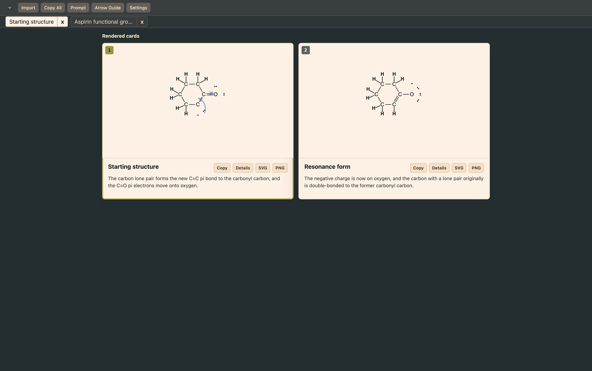
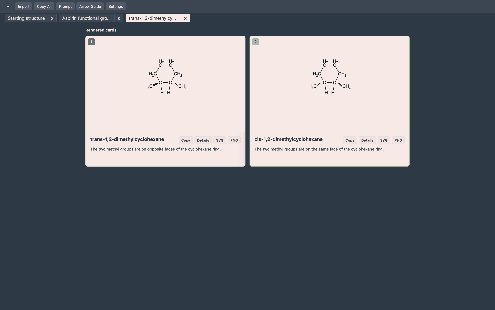
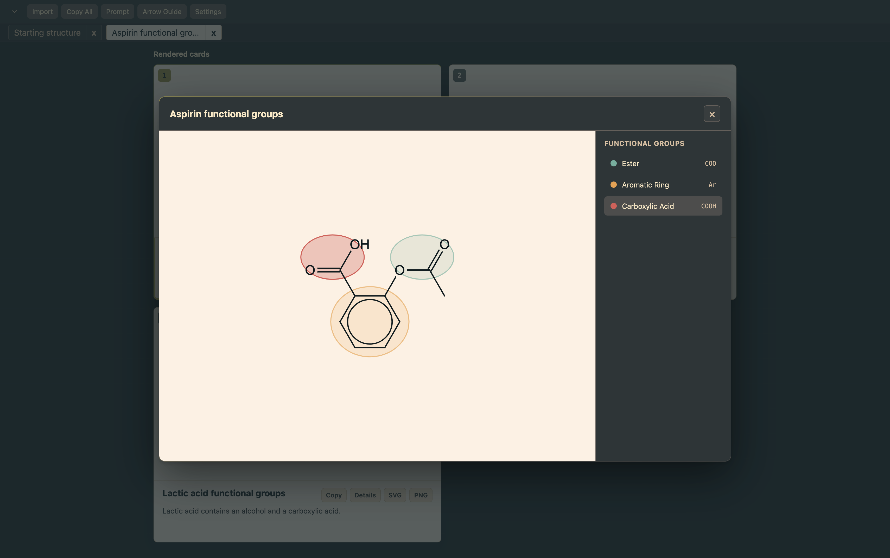
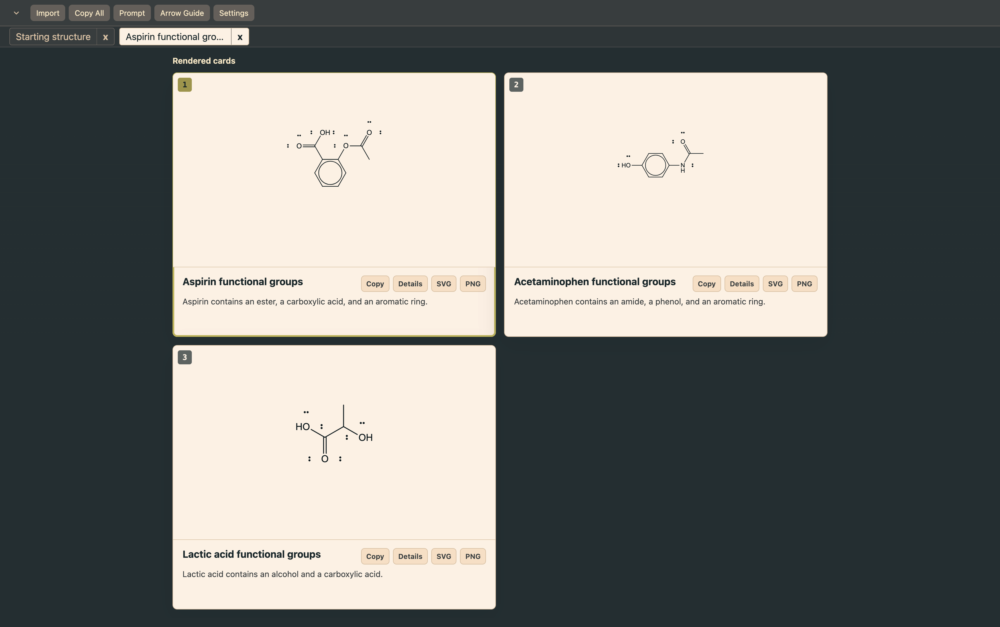
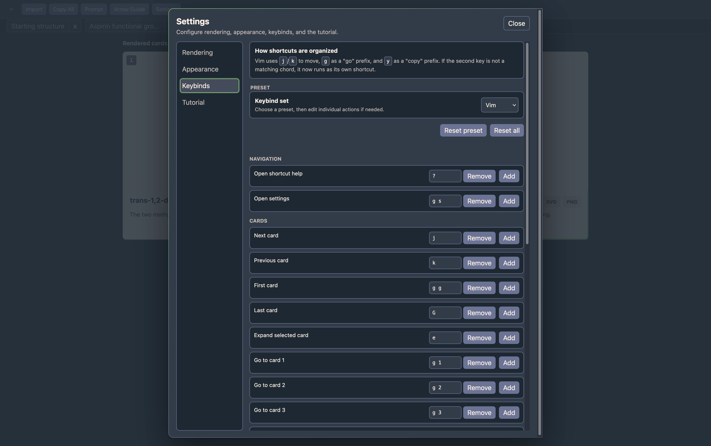
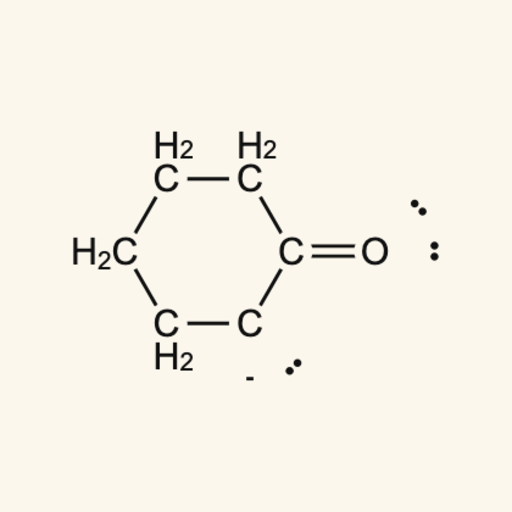

Copy the ChemRender prompt
Press one button to copy the instruction prompt that tells your LLM how to answer for ChemRender.
AI ochem help in, readable cards out
LLMs are great ochem tutors, but their chemistry drawings are often hard to study from. ChemRender lets you press Copy Prompt, ask any LLM, paste the answer back in, and get clean rendered chemistry cards.
Built for fast studying: one-button import, keyboard shortcuts, and flexible keybinds.

The study problem
ChatGPT, Claude, and other LLMs are patient and useful for walking through mechanisms, resonance, acid/base logic, and stereochemistry. The problem is that their chemistry representations often turn into ambiguous text, broken diagrams, or explanations that are hard to review later. ChemRender fixes the visual layer.
Workflow
Press one button to copy the instruction prompt that tells your LLM how to answer for ChemRender.
Resonance, mechanisms, stereochemistry, formal charges, functional groups, or whatever you are studying.
Import the response with a button or keybind and keep moving.
Review structures, captions, lone pairs, charges, arrows, and stereochemistry without decoding text diagrams.
Examples
Follow electron movement and charge placement without reading a wall of text.

Keep cis/trans and wedge/dash relationships visible while studying.

Turn AI explanations into reviewable cards for recognizing the chemistry that matters.

Make structures readable enough to screenshot, export, or put in notes.
Speed
ChemRender should not become another thing to manage. Copy the prompt, ask the AI, paste the response, and keep going. Keyboard shortcuts make import, replace, navigation, and export quick. Flexible keybinds let students use simple controls, Vim-style controls, or their own setup.

Download
Use ChemRender with the fast desktop clipboard workflow on macOS.
Download for Mac Signed and notarized for macOS.Use ChemRender with the same prompt, paste, and study flow on Windows.
Download for Windows NSIS installer (x64), packaged as a .zip.Tutorials
These are text walkthroughs for now. Illustrated tutorials with screenshots are coming later.
::mol).
::mol blocks).::mol block renders as its own molecule card with lone pairs, charges, arrows, and captions.The keyboard clipboard shortcuts work in the installed desktop app. In a browser, clipboard access is permission-gated, so the desktop app is recommended.
Each card is a small text block. Atom references use element order across the card —
O1 is the first oxygen, C2 the second carbon, and so on.
::mol
title: Starting structure
smiles: O=C1[C-]CCCC1
lonepairs:
O1: 2
C2: 1
charges:
C2: -
caption: One sentence about what to notice.title — the card heading.smiles — the molecule (standard SMILES).lonepairs / charges — manual annotations by atom reference.caption — a short, student-facing explanation.Add an arrows section to show electron movement. Endpoints reference atoms, lone pairs, or bonds.
arrows:
O1.lp1 -> N1-H1 curve: left
N1-H1 -> N1 curve: rightO1.lp1 — the first lone pair drawn on O1.O1 — the atom O1.C1-O1 — the bond between C1 and O1.curve: left / curve: right — optional bend direction.Exports include the molecule drawing and its annotations on an off-white background. They do not include the app UI, title, or caption.

Use your preferred LLM for explanations, then let ChemRender handle the visual study cards.
Your browser blocked clipboard access. Select the prompt below and paste it into your LLM.